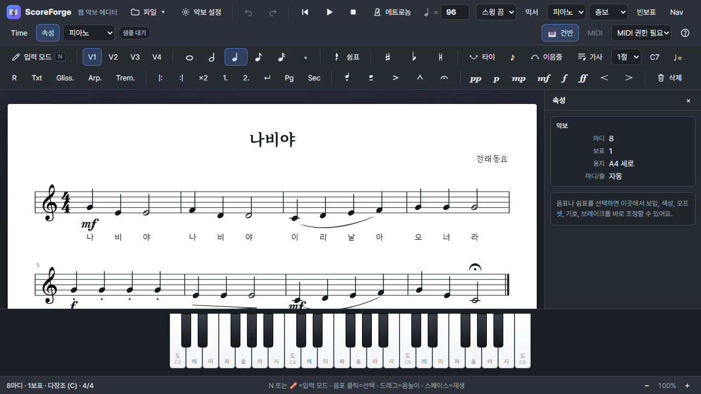
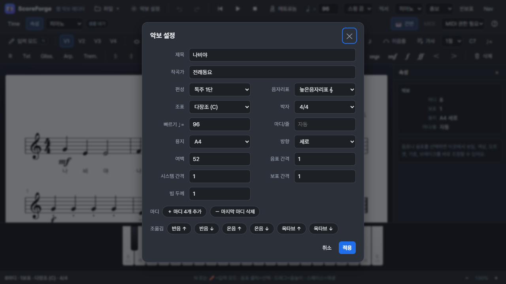
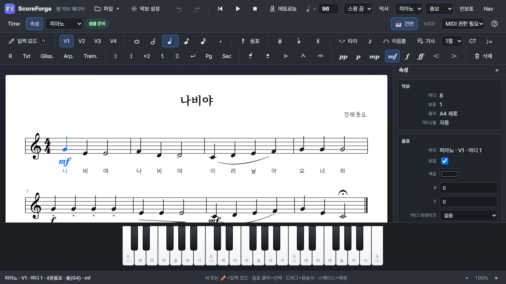
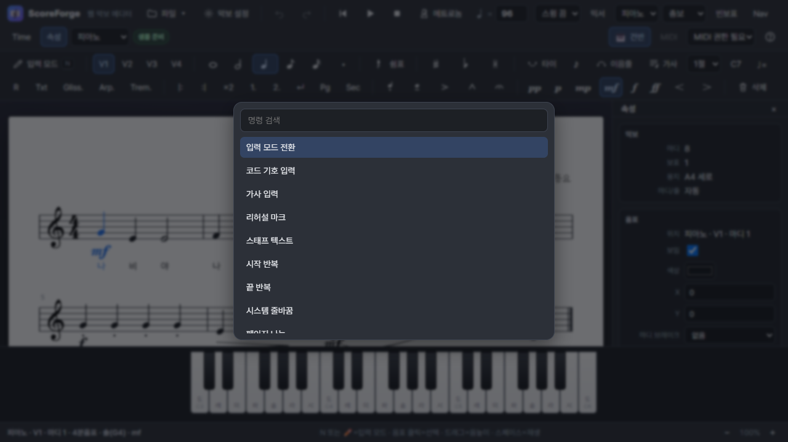
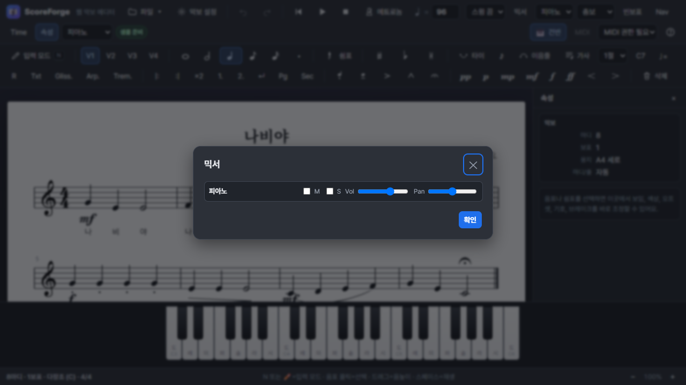
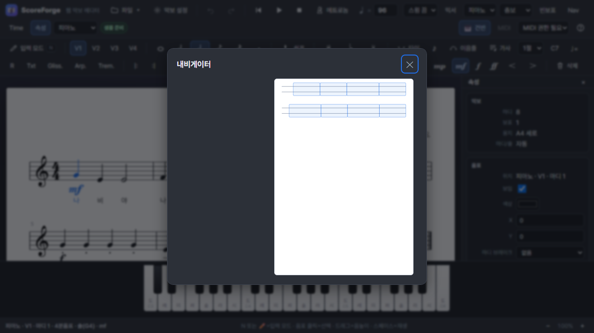
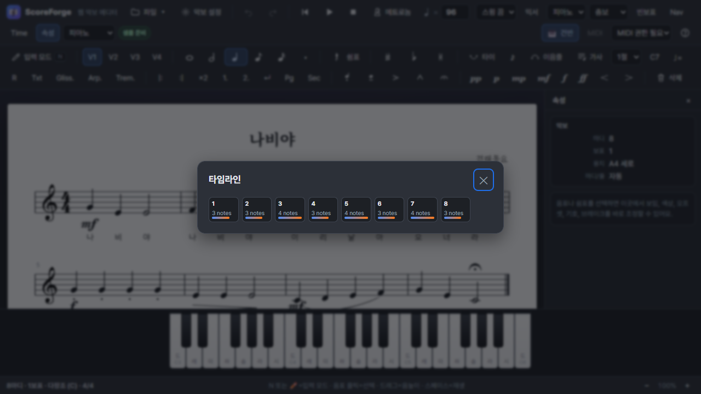
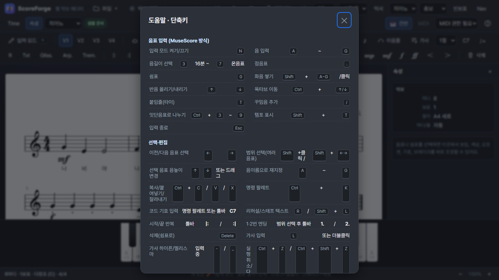

ScoreForge
퀵스타트
한글 설명서
처음 실행한 사용자가 10분 안에 4마디 악보를 만들고, 소리로 확인하고, 저장/내보내기까지 끝내는 빠른 안내서입니다.

0. 10분 안에 끝내는 전체 흐름
이 설명서는 모든 기능을 길게 설명하지 않습니다. 바로 작업할 수 있도록 꼭 필요한 순서만 따라가게 만들었습니다.
N 입력 모드, 3-7 음길이, A-G 음 입력, Space 재생만 기억해도 첫 악보를 만들 수 있습니다.
1. 첫 실행 - 화면 이름만 익히기
처음에는 모든 버튼을 외우지 않아도 됩니다. 상단 툴바, 입력 팔레트, 악보, 속성 패널, 하단 건반 위치만 확인하세요.
2. 새 악보 준비하기
작업을 시작하기 전에 제목, 편성, 박자, 조표, 템포를 먼저 정하면 입력 중에 덜 헷갈립니다.

나의 첫 악보, 작곡가는 본인 이름으로 둡니다.3. 4마디 악보를 바로 입력하기
아래 순서를 그대로 따라 하면 간단한 4마디 선율을 만들 수 있습니다. 틀려도 Ctrl+Z로 되돌릴 수 있습니다.
3-1. 입력 모드 켜기
3-2. 추천 연습 패턴
5를 누르고 C D E F를 입력하면 4분음표 네 개가 빠르게 들어갑니다. 리듬을 바꾸고 싶으면 음을 누르기 전에 4, 6 같은 음길이를 먼저 누르세요.
4. 선택하고 수정하기
입력한 음표를 클릭하면 오른쪽 속성 패널에서 세부 값을 바꿀 수 있습니다. 삭제, 복사, 붙여넣기, 실행 취소도 이 단계에서 자주 씁니다.

5. 기호와 텍스트를 빠르게 붙이기
첫 악보에는 셈여림, 이음줄, 가사, 코드, 템포 표시 정도만 넣어도 충분히 악보처럼 보입니다.
| 넣고 싶은 것 | 빠른 방법 | 확인할 점 |
|---|---|---|
| 셈여림 | mf, f, p 버튼 | 선택한 위치 아래에 붙습니다. |
| 이음줄 | 음표 선택 후 이음줄 버튼 | 시작 음과 끝 음을 확인합니다. |
| 가사 | 가사 버튼 또는 단축키 | 음표 아래에 syllable 단위로 입력합니다. |
| 템포 | Shift+T | 재생 템포맵에도 반영됩니다. |
| 리허설 마크 | R | A, B, C 같은 구간 표시로 씁니다. |

6. 재생하고 믹서로 소리 맞추기
입력한 악보는 바로 들어보는 것이 가장 빠른 검수 방법입니다. 틀린 음, 너무 빠른 템포, 파트 음량 문제를 여기서 잡습니다.

7. 악보가 길어질 때 빠르게 이동하기
마디가 많아지면 네비게이터와 타임라인을 켜서 전체 구조를 봅니다. 퀵스타트에서는 위치 찾기 정도만 익히면 충분합니다.


리허설 마크를 넣었다면 명령 팔레트나 네비게이터를 이용해 A, B, C 구간으로 빠르게 이동할 수 있습니다. 긴 악보에서는 먼저 리허설 마크를 붙여두면 편합니다.
8. 저장하고 내보내기
ScoreForge에서 계속 편집할 원본은 JSON으로 저장하고, 다른 프로그램이나 사람에게 줄 파일은 MusicXML, MIDI, PDF로 내보냅니다.
| 상황 | 추천 형식 | 메뉴/단축키 |
|---|---|---|
| 나중에 ScoreForge에서 이어서 편집 | JSON | Ctrl+S 또는 파일 - 저장 |
| MuseScore에서 열기 | MusicXML | 파일 - MusicXML 내보내기 |
| 음원/반주 제작에 활용 | MIDI | 파일 - MIDI 내보내기 |
| 과제, 수업자료, 인쇄 | 파일 - 인쇄/PDF 저장 |
9. 꼭 외울 단축키만 모아보기

| 단축키 | 기능 | 언제 쓰나 |
|---|---|---|
| N | 입력 모드 | 음표를 넣기 시작하거나 입력을 멈출 때 |
| 3-7 | 음길이 | 16분음표부터 온음표까지 바꿀 때 |
| A-G | 음 입력 | 키보드로 빠르게 선율을 넣을 때 |
| 0 | 쉼표 | 현재 길이의 쉼표를 넣을 때 |
| Space | 재생/일시정지 | 입력한 악보를 바로 확인할 때 |
| Ctrl+Z | 실행 취소 | 입력이나 편집을 되돌릴 때 |
| Ctrl+S | 저장 | 현재 악보를 JSON으로 보관할 때 |
10. 문제가 생겼을 때
대부분의 초반 문제는 입력 모드, 보표 선택, 오디오 권한, 파일 형식 확인으로 해결됩니다.
| 증상 | 가장 흔한 원인 | 빠른 해결 |
|---|---|---|
| 음표가 안 들어감 | 입력 모드가 꺼져 있음 | N을 누르고 입력 모드 표시를 확인합니다. |
| 다른 보표에 입력됨 | 보표 선택 드롭다운이 다른 파트임 | 상단의 보표/파트 선택을 원하는 악기로 바꿉니다. |
| 소리가 안 남 | 브라우저 오디오 권한 또는 샘플 로딩 | 화면을 한 번 클릭한 뒤 Space를 다시 누릅니다. |
| 음이 너무 높거나 낮음 | 옥타브 추론이 의도와 다름 | 입력 후 Ctrl+↑/↓로 옥타브를 조정합니다. |
| 외부에서 열 파일이 필요함 | JSON은 ScoreForge 원본 형식 | MuseScore로 보낼 때는 MusicXML로 내보냅니다. |
- 제목, 박자, 조표, 템포를 먼저 정했습니다.
- N으로 입력 모드를 켜는 방법을 확인했습니다.
- 작업 중간에 Ctrl+S로 JSON을 저장했습니다.
- 공유용 파일은 MusicXML 또는 PDF로 내보냈습니다.